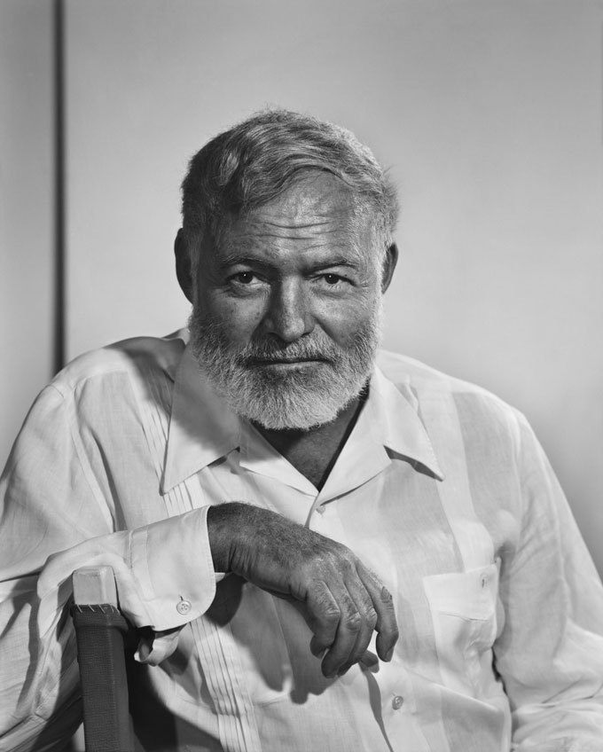
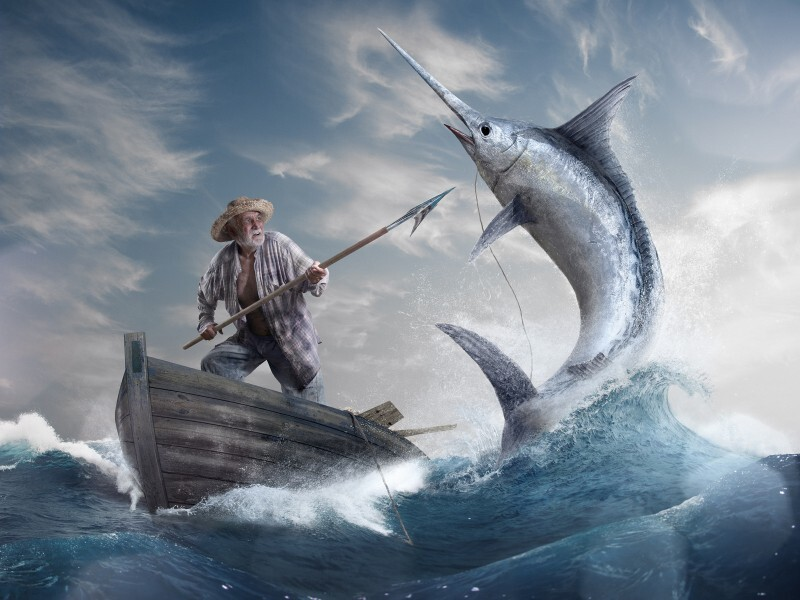
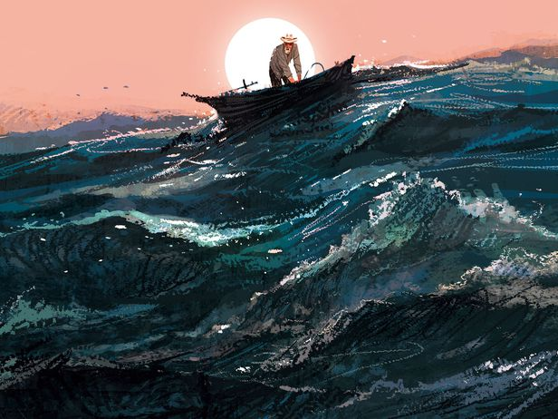

노인과 바다 -어니스트 헤밍웨이
  ‘그는 멕시코 해류에서 조각배를 타고 홀로 고기잡이하는 노인이었다.
여든 날하고도 나흘이 지나도록 고기 한 마리 낚지 못했다.’
···
“하지만 인간은 패배하도록 창조된 게 아니야.” 그가 말했다.
“인간은 파멸당할 수는 있을지 몰라도 패배할 수는 없어.”
-어니스트 헤밍웨이, [노인과 바다]-
여기 노인이 있다. 어부로서의 사명을 다하기 위해 노인은 오늘도 바다에 나간다. 그는 운이 매우 좋지 않다. 팔십 일이 넘는 오랜날동안 고기를 한마디도 잡지 못했기 때문이다. 그러나 그는 결코 좌절하지 않는다. 그는 오늘도 낚시줄과 미끼를 챙겨 바다로 나간다.
운좋게도 노인은 태어나서 가장 큰 고기와 맞닥뜨렸다. 자신이 타고 있는 배보다도 더 큰, 거대한 청새치이다. 망망대해에서 노인은 홀로 이틀 밤낮으로 고기와 사투를 벌인다. 결국 고기를 잡았지만 피 냄새를 맡은 바다의 상어들은 그의 배를 집요하게 쫒아온다. 지치고 상처를 입은 그였지만 그는 결코 포기하지 않는다.
‘하지만 난 녀석에게 인간이 어떤 일을 할 수 있는지, 또 얼마나 참고 견뎌 낼 수 있는지 보여 줘야겠어.
“나는 그 아이에게 내가 별난 늙은이라고 말했지. 지금이야말로 그 말을 입증해 보일 때야.” ’
-어니스트 헤밍웨이, [노인과 바다]-
나도 세상에게 이뤄낸 모든 것을 빼앗긴 뒤에 사자 꿈을 꿀 수 있을까. 마지막 문장을 읽고 울컥했다. 삶이 그러하듯, 바다는 밀물과 썰물처럼 모든 것을 주었다가 다시 거둬갔다. 그는 고기와 바다를 사랑하듯이 그의 고난과 운명을 사랑했고 또 받아들였다. 노인은 자신이 어떤 일을 해낼 수 있는지, 얼마나 참고 견딜 수 있는지 자신을 끌고다니는 청새치에게, 바다에게 보여주려 했다. 그것이 아무런 의미가 없다는 것을 알면서도 끝끝내 증명해보이려 했다. 그가 소년에게 말했듯 그는 별난 늙은이었기 때문이다.
노인은 사자 꿈을 꾼다. 바다에 나가기 전에도, 걸을 수 없을 정도로 지친 몸으로 돌아온 뒤에도 꿈을 꾸었다. 젊은 날 거대한 바다를 돌아다니며 보았던 사자들은, 이제 그의 가슴속에 살아있다. 사자는 사냥을 멈추지 않는다. 끊임없이 사냥한다. 실패하고 실패해도 다시 사냥을 나간다. 사자가 그렇듯 노인은 내일도 바다에 나갈 것이다. 80일동안 아무것도 잡지 못하더라도, 마침내 잡아낸 거대한 물고기를 상어들에게 빼앗겨도, 그는 멈추지 않고 바다에 나갈 것이다. 그것이 노인의 삶이기 때문이다. 그는 오늘 밤에도 여전히 사자 꿈을 꾼다.